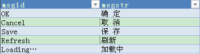
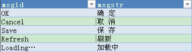
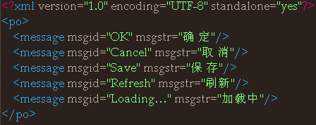

Pick up text in the html and javascript files
We have a tool name "textPicker" to help you with rough pick up, and you may fix the flaws afterwards. You can find it and a brief readme text in folder "automaticTool".
Well, we used to do the pick-up job all by hand, and that's quite funny experience, I was serious.
Do translate
After you finished pick-up, for the convenience of translators, we suggest that you put all the text that need to be translated in a excel or xml file like this:
 

If you want to carrier translation with xml file, format your file like this:

But the xml style is not recommend, for it have to use redundant tags and the speed of translation is slower than JSON style.
If you want your language packet organized in the form of JSON, you should choose excel(Use Microsoft Excel 2007 or higher version) as carrier of translation, and use language as column title. You can also add an extra column for JSON as "msgid" when you don't want use the translated text itself as translate anchor, then you should have the text wrapped with an element tag and add a data-lang="msgid" attribute on it. We have a automatic tool in perl named "JSONParser" in folder "automaticTool" to parse excel file you can read the "readme" document to get start. The output file looks like this:
{"OK":"确定",
"Cancel":"取消",
"Save":"保存"}
Yes, you can also try it out to arrange the JSON file in this way by hand and share your feelings with us, for we've never done that before. Oh, don't forget to escape ' " ' and ' \ ' or you won't like to see the translate result.
About the text in javascript file, you need to translate them with function "_" like this: _('text'). And you may use it this way: _('My name is %s, I like %s', ['lvjs', 'fruit']);, "%s" will be replace by the given arguments.
Put the JSON or xml file in the lang folder. And add a script B.setTextDomain(["languagePacketFile1", "languagePacketFile2"], language); in the html right after <script src="lang/b28new_3.0.0.js"></script>.Then try to open your work on browser to see if the translate works. The number of bugs might beyond your expectations, but don't worry, it'll be much better next time.
Ok, After finished the debug, you might think it's time to declare mission accomplished, but I have to remind you the tranlation may not be perfect, do take care about the style for translation text may be much longer(or shorter) than the before.